El sábado 29 de noviembre de 2008 tuve la oportunidad de participar en una emocionante aventura 4x4 hacia San Carlos del Zulia, organizada por la Fundación Extreme 4x4. Esta experiencia me permitió conocer paisajes únicos de nuestra región, desde la orilla del mar hasta los impresionantes médanos, culminando en el histórico faro de San Carlos.
Detalles de la Expedición
29 de Noviembre 2008
Fundación Extreme 4x4
San Carlos del Zulia
Vehículos 4x4
Orilla del mar y médanos
Faro histórico
La Aventura en Imágenes
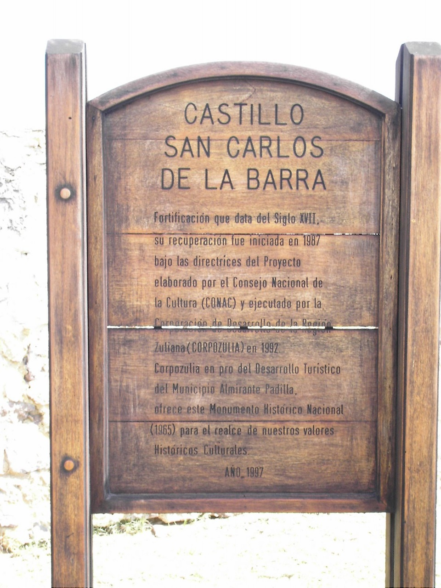
La expedición comenzó temprano en la mañana, con un grupo entusiasta de aventureros equipados con vehículos 4x4 preparados para enfrentar los desafíos del terreno. La ruta nos llevó por caminos poco transitados, donde pudimos apreciar la belleza natural de la península de San Carlos.
La Experiencia
Fundación Extreme 4x4
La Fundación Extreme 4x4 se caracteriza por organizar expediciones responsables que combinan la aventura con el respeto por el medio ambiente y la promoción del turismo local. Este viaje a San Carlos fue una muestra perfecta de su filosofía: explorar, disfrutar y preservar.
Durante el recorrido, tuvimos la oportunidad de transitar por la orilla del mar, sintiendo la brisa marina y observando el contraste entre el azul del Golfo de Venezuela y la arena dorada de la costa. Los médanos de San Carlos ofrecieron un espectáculo natural impresionante, con formaciones de arena que cambian constantemente por la acción del viento.
Momento Destacado
El punto culminante del viaje fue llegar al faro de San Carlos, una estructura histórica que ha servido como guía para los navegantes durante décadas. Desde allí, pudimos contemplar una vista panorámica espectacular del Golfo de Venezuela y comprender la importancia estratégica de esta ubicación.
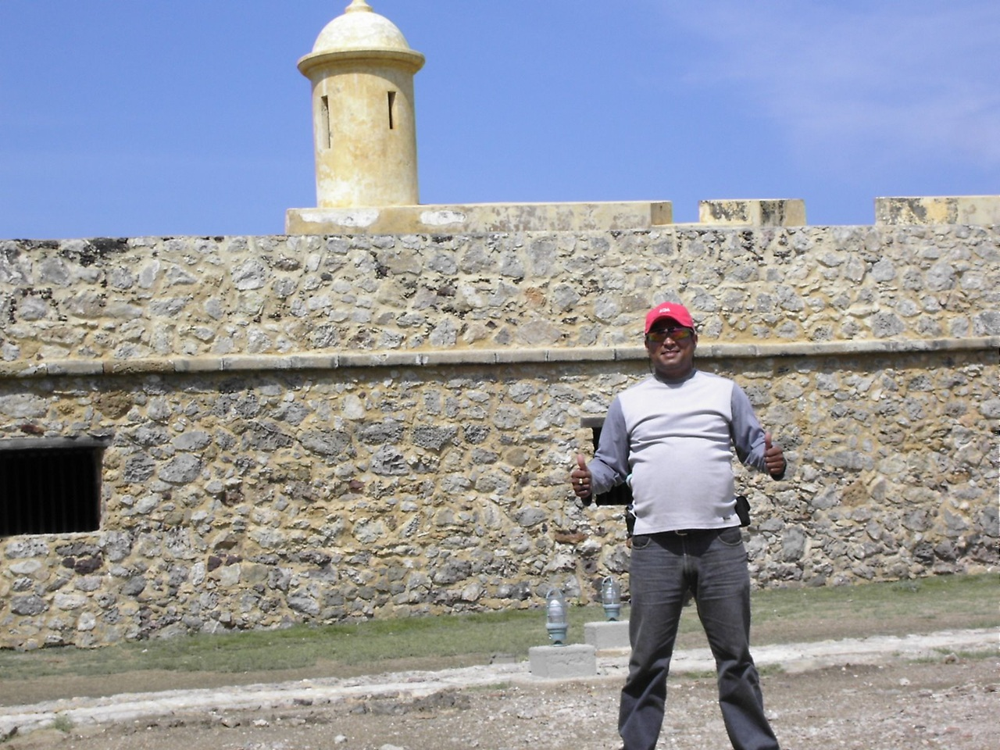
Paisajes únicos de la península de San Carlos
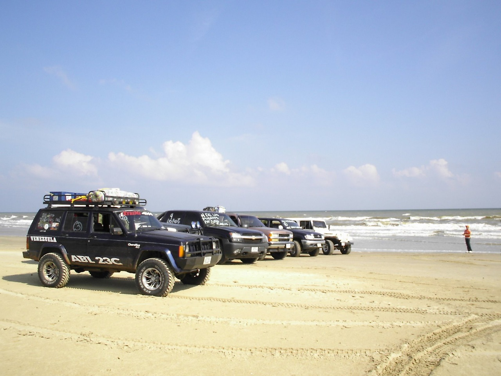
Los vehículos 4x4 enfrentando el terreno desafiante
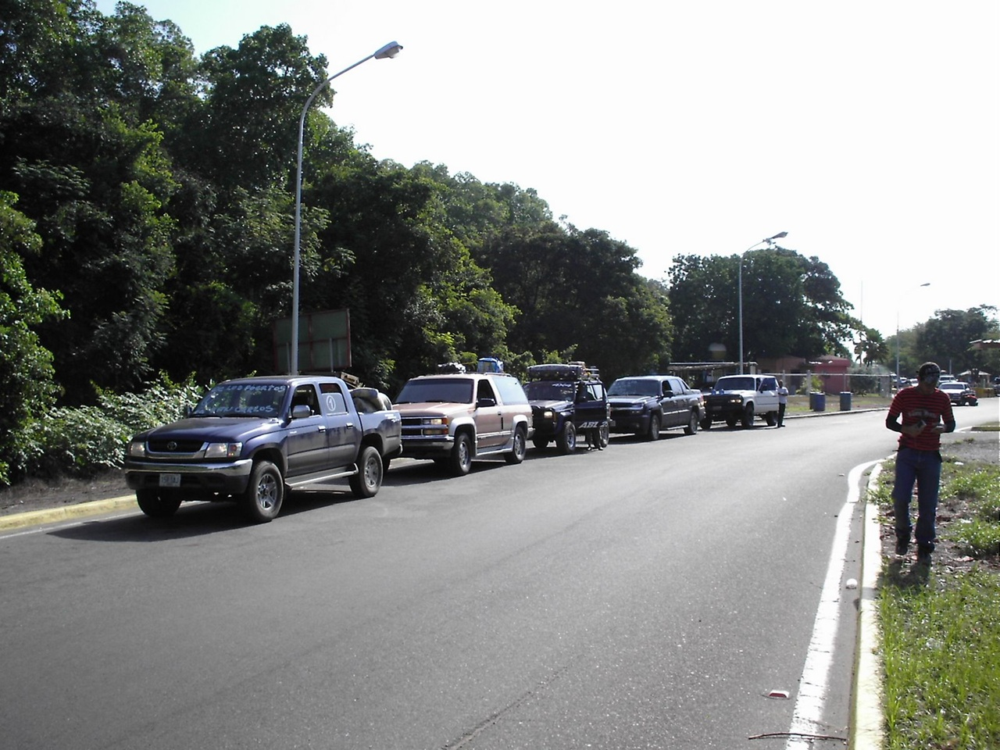
Justo antes de cruzar el Puente del Rio Limon.
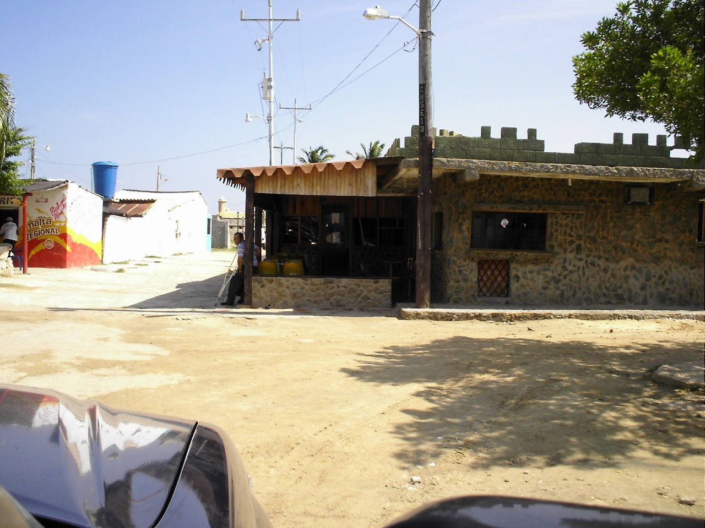
En el propio San Carlos, este es un Restaurant que nos llamó mucho la atención, muy bonito.
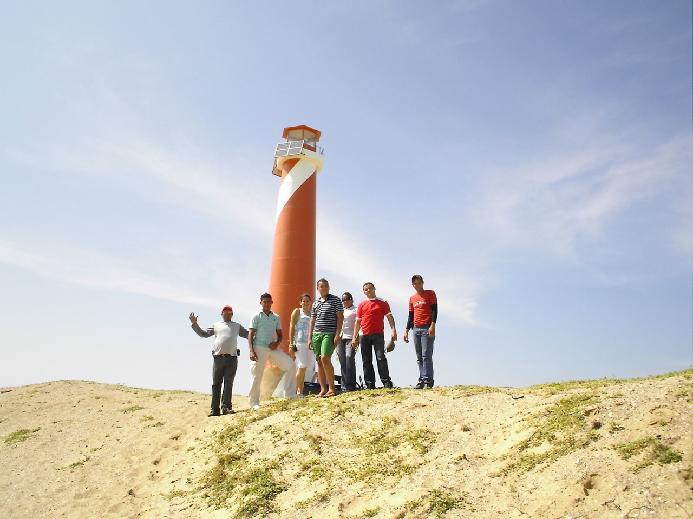
Saludos desde el Faro, en la Isla de San Carlos.
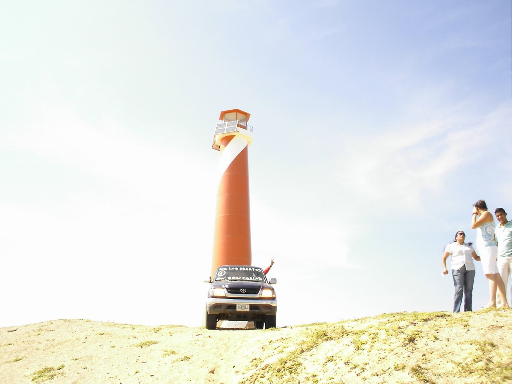
Melvis Garcia, en su Hilux... devoró todos los médanos que se le atravesaron en el camino.
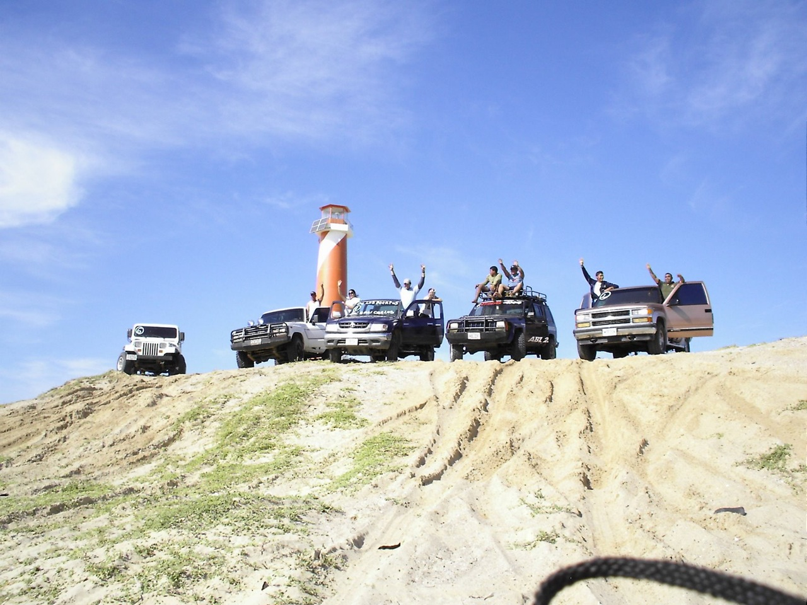
Saludossssssss... a los Puertos de Altagracia..
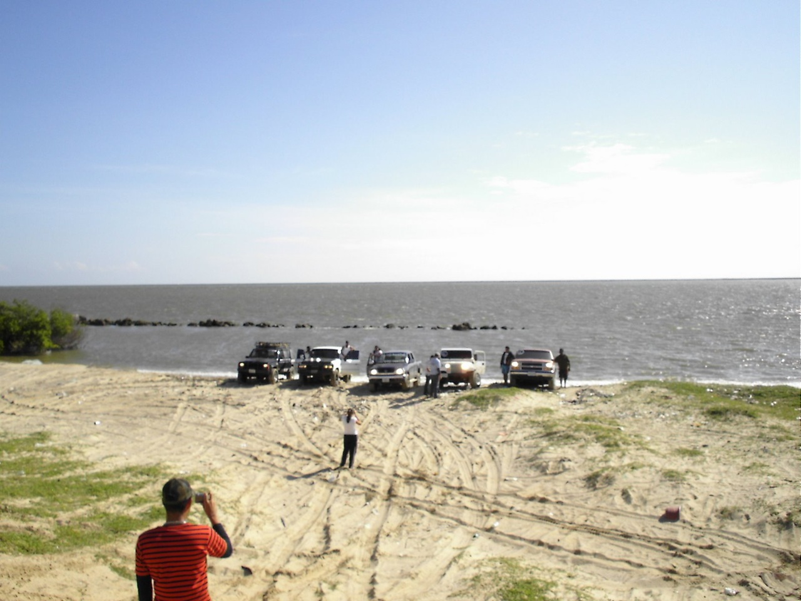
Hermosa Vista, hacia el Mar Caribe.
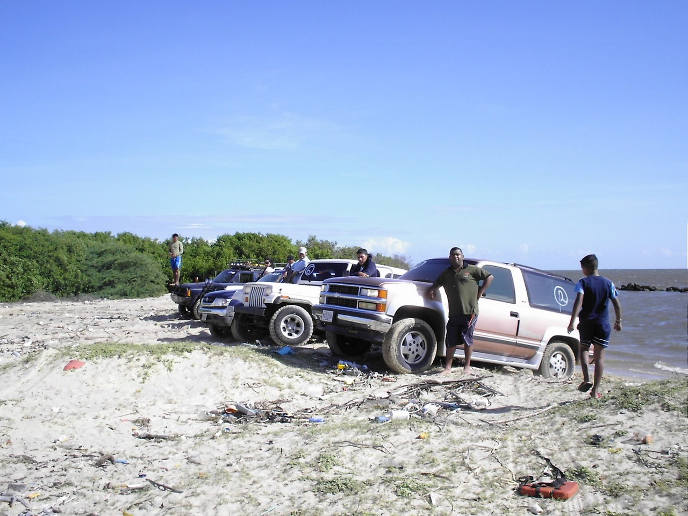
Hermosa Vista, hacia el Mar Caribe.
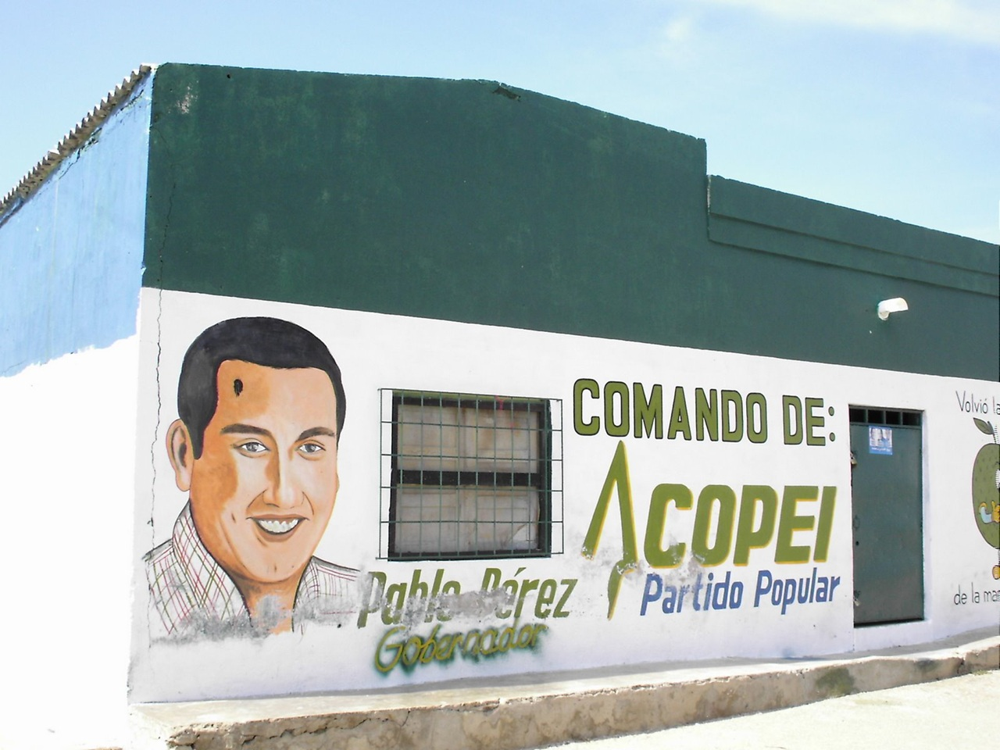
Esta Publicidad Política, nos causó un verdadero ataque de risas. SIN PALABRAS....
Reflexiones del Viaje
Esta experiencia con la Fundación Extreme 4x4 me permitió redescubrir la belleza natural de nuestra región zuliana. San Carlos del Zulia no es solo un destino turístico, sino un lugar lleno de historia, naturaleza y paisajes que nos recuerdan la riqueza geográfica de Venezuela.
El viaje también fue una oportunidad para compartir con otros entusiastas del 4x4, intercambiar experiencias y crear nuevas amistades unidas por la pasión por la aventura y el respeto por la naturaleza. La organización impecable de la Fundación Extreme 4x4 hizo que cada momento fuera memorable y seguro.